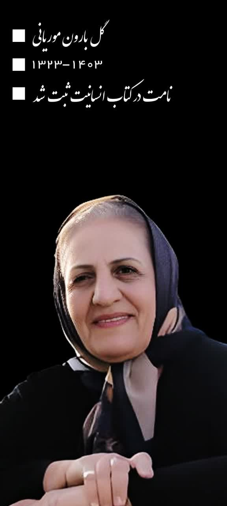

گلبارون موریانی
بانوی فداکار، بازنشسته شرکت ملی نفت ایران، نمونه ای از عشق، فداکاری و استقامت
مشاهده زندگینامه و خاطراتهدف از ایجاد این سایت
این سایت به عنوان یادبودی ماندگار ایجاد شده تا:
✓ خاطرات عزیزان گرانقدر حفظ شود
✓ نسلهای آینده با زندگی و ارزشهای آنان آشنا شوند
✓ نام و یادشان برای همیشه زنده بماند
✓ الگوهای نیک زندگی آنان ثبت و انتقال یابد